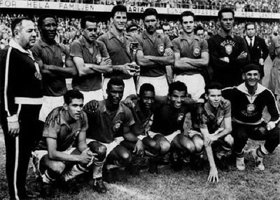
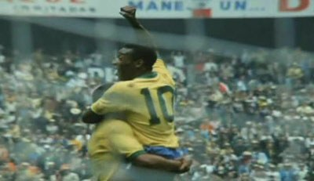

Pelé
 Născut la 23 octombrie 1940 în Minas Gerais, Brazilia, Edson Arantes do Nascimento avea să devină mai cunoscut în întreaga lume sub numele de Pelé. Tatăl său, João Ramos do Nascimento, a jucat el singur fotbal profesionist, dar cariera nu l-a adus niciodată prea mult în calea banilor. Așa cum spune legenda, familia lui Pelé nu și-a permis nici măcar să-și cumpere o minge pentru el, așa că a umplut șosete și i-a modelat în formă de minge pentru a da lovitura.
Născut la 23 octombrie 1940 în Minas Gerais, Brazilia, Edson Arantes do Nascimento avea să devină mai cunoscut în întreaga lume sub numele de Pelé. Tatăl său, João Ramos do Nascimento, a jucat el singur fotbal profesionist, dar cariera nu l-a adus niciodată prea mult în calea banilor. Așa cum spune legenda, familia lui Pelé nu și-a permis nici măcar să-și cumpere o minge pentru el, așa că a umplut șosete și i-a modelat în formă de minge pentru a da lovitura.
Biografie
Începuturile
Deși a continuat să lupte financiar la São Paulo, lucrând o varietate de locuri de muncă pentru a-și ajuta familia, tânărul Pelé și-a găsit adevăratul talent pe teren. Sub tutela tatălui său și a unui fost jucător al echipei naționale pe nume Waldemar de Brito, Pelé a început să se maturizeze ca jucător la juniorii Bauru Athletic Club. Antrenorul de Brito și-a recunoscut abilitatea și l-a recomandat pentru o încercare cu Santos FC.
Conducerea echipeiâ a fost de acurd cu evaluarea lui Brito și a semnat cu Pelé în iunie 1956. La doar trei luni, Pelé a marcat un gol în meciul său de debut. Deși puțini oameni știau la vremea respectivă, acest lucru a prevestit succesul de a veni în restul carierei profesionale a lui Pelé.
Ascensinuea unui tânăr fotbalist
Doar un an mai târziu, Pelé a trecut pe lista marcatorilor din ligă. Performanța sa, la vârsta fragedă de 17 ani, a atras atenția echipei naționale. Nu ar dezamăgi. În prima sa apariție pe scena mondială, el a marcat goluri cheie atât în semifinală cât și în meciul final al Cupa Mondială din 1958 pentru a o câștiga pentru Brazilia. În acest moment, el a atins statutul de supererou în Brazilia și a devenit un nume de gospodărie în întreaga lume. Guvernul brazilian l-a onorat ca "tezaur național", care i-a ridicat statutul acasă, dar l-a împiedicat să profite de oferte largi.
Accidentările
La nivel individual, următoarele două Cupe Mondiale s-au dovedit dezamăgitoare din cauza accidentărilor. Partea braziliană încă a câștigat turneul în 1962, dar au pierdut mult în 1966 fără jucătorul lor de stea - au fost eliminați în faza grupelor. În această perioadă, totuși, Pelé a continuat să exceleze în echipa sa de club, Santos. În mod constant golgheter, el s-a confruntat deseori cu echipe care și-au modificat jocul special pentru a face față amenințării pe care le-a prezentat. În ciuda acestui fapt, el a reușit să marcheze 60 de goluri în sezonul 1964 și 101 goluri în anul următor.
Retragerea și revenirea
Până în 1970, Pelé se hotărâse să-și agățească pălăria și să plece în timp ce era deasupra. Cu toate acestea, el a fost în cele din urmă coaxed în a juca o ultimă Cupa Mondială pentru Brazilia în Mexic, ceea ce mulți consideră cea mai bună echipă din istorie. Pelé a contribuit la câștigarea turneului din Brazilia cu goluri și câteva asistențe importante, obținând el însuși premiul Balon de Aur pentru jocul său. Pelé a continuat cu echipa braziliană încă un an, numindu-l în cele din urmă renunță la 1971. La câțiva ani după aceea, și-a spus adio fanilor săi de la Santos. Cu toate acestea, zilele sale de jucător nu s-au terminat.
Cariera târzie
Deși a spus mult timp că va juca vreodată pentru Santos, nu a putut rezista să răspundă apelului de la New York Cosmos din 1975. Liga de Fotbal din America de Nord (NASL) a reprezentat un pas semnificativ în ceea ce privește nivelul de joc pe care Pelé era obișnuit. Cu toate acestea, liga înrăită a beneficiat mult de acest ambasador al jocului, iar vânzările de bilete au crescut. Publicul american, în mare parte necunoscut cu jocul, a luat notă. Pelé a condus Cosmosul la un campionat înainte de a se retrage pentru bine, eveniment marcat de un meci de expoziție între echipa sa adoptivă din New York și Santos.
Moștenirea și viața după cariera de fotbal
La pensionarea sa, în 1977, Pelé a acumulat o serie de înregistrări aparent incalculabile. El a acumulat un total de 1.283 de goluri în 1.363 de meciuri, ceea ce l-a făcut cel mai mare marcator în istoria echipei naționale braziliene și în istoria FIFA. La fel de impresionant, a reușit să scoată 92 de trucuri de pălărie. De asemenea, a stabilit un record pentru cele mai multe victorii ale Cupei Mondiale FIFA pentru o persoană, cu trei medalii pe numele său. Totuși, primii lui ani nu trebuie trecuți cu vederea. Tânărul Pelé s-a arătat strălucitor, devenind cel mai tânăr jucător care a înscris un hat-trick și cel mai tânăr jucător care a marcat într-un meci final al Cupei Mondiale.
La pensie, „O Rei” a continuat să facă campanii pentru o varietate de cauze, inclusiv reducerea sărăciei, mișcările anticorupție și protecția mediului. El a primit, de asemenea, un cavaler onorific, a ocupat funcția de ministru al Sportului în Brazilia și și-a asumat rolul de ambasador UNICEF Goodwill Goodwill. Desigur, nu a încetat niciodată să promoveze jocul în întreaga lume, inclusiv evenimente FIFA și ceremonii olimpice. Poate cel mai memorabil dintre toate, el a popularizat fraza "frumosul joc" ca shorthand pentru jocul pe care îl iubea atât de mult.
Generații de entuziaști și-au imaginat jucându-se cu harul și frumusețea lui "The Black Pearl". Putea să lovească mingea cu o precizie uluitoare sau să o lovească de coechipier printr-o pânză groasă de picioare de apărători. Lovitura sa emblematică de bicicletă care a marcat golul în Belgia în 1968 i-a trimis pe jucători tineri din toată lumea să se repezească afară pentru ore întregi de antrenament dureros. Ceea ce i-a uluit pe mulți dintre colegii săi jucători a fost abilitatea lui neobișnuită de a-și ieși din aproape orice situație cu o abilitate pură.
Pentru cei care s-au întrebat despre originea numelui „Pelé”, răspunsul se dovedește evaziv. Unii au susținut că provine din proasta pronunție a lui Pelé cu numele unui portar pe care îl admira numit „Bilé”. Conform acestei versiuni a evenimentelor, coechipierii săi i-au dat pe jumătate batjocorire numele de „Pelé” și nu l-a putut agita. Pelé însuși nu a dat niciodată un raport definitiv despre modul în care a primit numele. De fapt, el a susținut că nu a îngrijit-o niciodată prea mult. Totuși, la fel de mult în viața acestui superstar, magia nu se află nu în detalii biografice minime sau în trivia, ci în moștenirea pe care Pelé a lăsat-o pe teren.